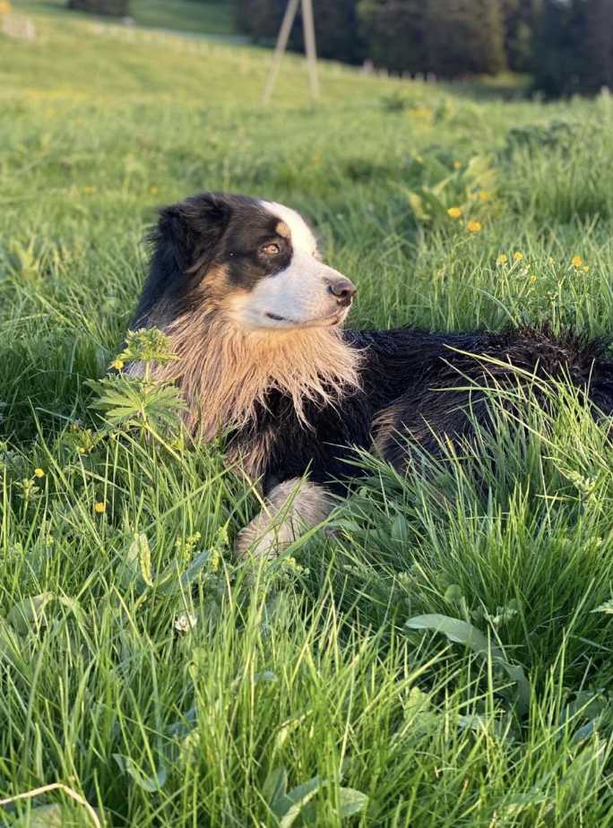

Antonis Papatheodorou - Web Developer

Hey there..I'm Antonis. I enjoy everything that has to do with music, traveling with my dog and experimenting with cooking. Welcome..
Music
- Piano
- Music Production
- Record Collection
Piano is a big part of my life. I started playing the piano in the age of 10. I continued with finishing all the degrees and studying music arts and piano in the univercity. Later on, i became myself a piano teacher and hopefully i will stay forever a piano enthusiast.
Parralell to the piano and the classical direction, i have a great interest for electronic music and i am producing since almost 10 years now, trip hop and ambient tracks.
I collect records as other people might collect beer caps, hats or fridge magnets. When it comes to listening, i consider my listening versatile and i have records from Nigerian Funk to Japanese Disco and from traditional Greek music to Detroit Tehno.
Cooking
I enjoy cooking and improvising when it comes to recipe development. Japanese Cuisine is my favorite and i'm trying constantly to learn tricks, techniques and ingredients from the locals.
Travelling with my dog
I am fortunate enough to have Oslo arriving in my life. As every dog owner, i claim that he is the smartest and most beautiful dog ever existed. We love traveling together and exploring hidden gems and untrailed parts of the nature with skiing being our favorite sport.